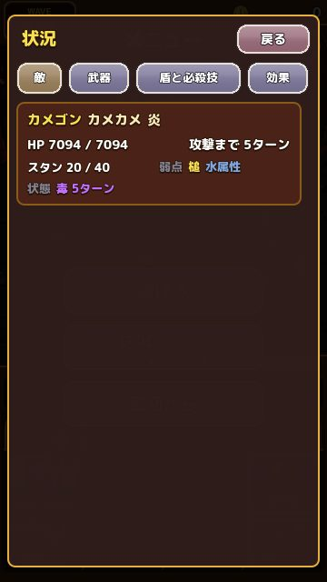

地上の攻略 終盤（氷の洞窟〜灼熱の洞窟）
氷の洞窟・氷の宮殿・深淵の観測所・灼熱の洞窟の敵と弱点、ボス対策と最後の城への準備。 更新：2026-11-23
終盤の特徴
終盤の 4 エリア（氷の洞窟・氷の宮殿・深淵の観測所・灼熱の洞窟）は、どこも洞窟の景色の戦闘として扱われ、エリアの中の敵の属性がほぼ 1 つにそろっているのが特徴です。属性が合う武器を持っていけば一気に楽になり、合わない武器のままだと驚くほど苦戦します。前のエリアのボスがくれる武器が、次のエリアの敵にぴったり合うように並んでいるので、初回クリアの品は必ず使ってみましょう。
敵の表の「間隔」は、攻撃してくるまでのカウントの基本の数です。終盤は大きさ M の敵（人間・メイド・ゴーレム・ウルフ）が増え、雑魚でも HP が多く、1 発が重くなります。洞窟の景色なので、平原の村でもらえるモグランシールド（洞窟の戦闘でガードしたダメージをさらに 30% 減らす）もまだまだ現役です。

終盤 4 エリアの早見表
出発前の装備選びに使えるよう、各エリアで有利になる武器をまとめました。「ボス向き」は、属性の有利（ダメージ 2 倍）と弱点の種類（ダメージ 1.5 倍・スタン値 5 倍）の両方がそろう組み合わせです。
| エリア | 雑魚の属性 | 雑魚に有利 | 中ボス向き | ボス向き |
|---|---|---|---|---|
| 氷の洞窟 | 光 | 闇の武器 | 闇の槍 | 闇の剣 |
| 氷の宮殿 | 光 | 闇の武器 | 闇の剣 | 光の槍 |
| 深淵の観測所 | 闇 | 光の武器 | 光の槍 | 光の剣 |
| 灼熱の洞窟 | 炎 | 水の武器 | 水の槌 | 水の槌 |
氷の宮殿だけは、雑魚と中ボスが光、ボスが闇と属性が入れかわります。STAGE 5 に出るときは、雑魚用の闇の武器に加えて、ボス用の光の槍を必ず 1 本入れておきましょう。

氷の洞窟
凍りついた洞窟で、出てくる敵はすべて光の属性です。闇の武器ならどの敵にも 2 倍のダメージが入ります。王宮騎士オージーンも雑魚として出てきますが、雑魚のときは中ボスのときのような「ボスの盾」は使いません。
| 敵 | 種族 | 属性 | 弱い武器 | 間隔 |
|---|---|---|---|---|
| メカメカ | カメカメ | 光 | 槌 | 4 |
| 花火ゴースト | ゴースト | 光 | 剣 | 3 |
| プチェロン | ドラゴン | 光 | 槍 | 3 |
| キラメイド | マーメイド | 光 | 剣 | 4 |
| 王宮騎士オージーン | 人間 | 光 | 槌 | 4 |
中ボス：サンダーウルフ（ケモノ・光・槍が弱点）
ウルフの中ボスなので、2 カウントごとに攻撃してきます。闇の槍でスタンを取り、スタン中にまとめて攻撃しましょう。お供にオージーンやキラメイドなど大きさ M の敵がつくと長期戦になりやすいので、ウルフを先に倒すのが基本です。
ボス：光龍ゴルデピカライア（ドラゴン・光・剣が弱点）
必殺技は、空から光の柱が降りる「グロリアスレイ」。光の属性で剣が弱点の竜です。孤島でもらったティアマルト（闇・剣・闇ブースト）は、属性の有利で 2 倍、弱点の剣で 1.5 倍、さらに闇ブーストで威力が 130% と、このボスのための 1 本といえます。
おすすめと初回クリアの品
闇の剣（ボス・ゴースト・メイド用）、闇の槍（中ボス・プチェロン用）、槌（メカメカ・オージーン用）。STAGE 5 を初めてクリアすると光輪のヤリ（SR・光・槍。HP が最大の 30% 以下のとき威力 150% になる「死の境地」）がもらえます。光の槍は、次の氷の宮殿のボスと、その次の深淵の観測所の雑魚によく効きます。
氷の宮殿
氷でできた宮殿です。雑魚は光の属性の強い顔ぶれで、オージーン・光のパラディーナ・ライトゴーレムなど大きさ M の敵が多く、地上の雑魚の中でもとくに手ごわいエリアです。ところがボスだけは闇の属性なので、雑魚用（闇の武器）とボス用（光の武器）をきちんと分けて持っていく必要があります。STAGE 5 をクリアすると水の宝玉が手に入ります。
| 敵 | 種族 | 属性 | 弱い武器 | 間隔 |
|---|---|---|---|---|
| 王宮騎士オージーン | 人間 | 光 | 槌 | 4 |
| 光のパラディーナ | 人間 | 光 | 槍 | 4 |
| ライトゴーレム | ゴーレム | 光 | 槌 | 5 |
| メカメカ | カメカメ | 光 | 槌 | 4 |
| プチェロン | ドラゴン | 光 | 槍 | 3 |
中ボス：キラメイド（マーメイド・光・剣が弱点）
氷の洞窟では雑魚だったキラメイドが中ボスになります。闇の剣があれば、ここでもティアマルトが活躍します。お供には大きさ M の敵がつきやすいので、中ボスを倒すまでの時間を短くすることを意識しましょう。
ボス：闇龍ヤミジャス（ドラゴン・闇・槍が弱点）
必殺技は闇の霧で包む「グルームブレス」。そして、アーケディア城のマーゴスと同じ「ST 吸収」を持っていて、ジャストガードかミラクルガード以外で攻撃を受けると ST を 3 減らされます。ふつうのガードでは ST がどんどん減っていくので、このボスとの戦いではジャスト以上を強く意識しましょう。ジャストガードは逆に ST が 2 回復するので、うまく決まるほど有利になります。弱点は槍、属性は闇なので、氷の洞窟でもらった光輪のヤリがぴったりです。
おすすめ
雑魚用に闇の槌と闇の槍、ボス用に光の槍。槌が弱点の雑魚が 3 種類いるので、槌は強いものを用意しておきましょう。ここには初回クリアの武器はありません。

深淵の観測所
闇に包まれた観測所で、雑魚はすべて闇の属性です。光の武器ならどの敵にも 2 倍。氷の洞窟でもらった光輪のヤリは、槍が弱点のプチャークや中ボスのシャドウウルフに 2 倍と 1.5 倍が重なります。
| 敵 | 種族 | 属性 | 弱い武器 | 間隔 |
|---|---|---|---|---|
| グレブリン | ゴブリン | 闇 | 剣 | 3 |
| めちゃ悪おやじ | おやじ | 闇 | 槌 | 3 |
| トゲカメ | カメカメ | 闇 | 槌 | 4 |
| いたずらゴースト | ゴースト | 闇 | 剣 | 3 |
| プチャーク | ドラゴン | 闇 | 槍 | 3 |
中ボス：シャドウウルフ（ケモノ・闇・槍が弱点）
孤島では雑魚だったシャドウウルフが中ボスです。2 カウントごとの攻撃に気をつけながら、光の槍でスタンを取りましょう。
ボス：闇のダルクネス（人間・闇・剣が弱点）
必殺技は大きな鎌の「ソウルサイス」。そして孤島のナーゾキーモスと同じく「武器封じ」を持っています。戦いが始まるとすぐに、手に持っている武器の欄が 3 ターン封じられ（この 1 発はガードできず、ダメージはなし）、そのあとも必殺技の番に武器封じを撃ってきます。ガードすればダメージは減りますが、封じを防げるのはミラクルガードだけです。
- 弱点は剣なので、光の剣を 2 本入れておくと、1 本封じられても弱点で攻め続けられます
- 必殺技の番に赤い吹き出しが出たら、ミラクルガードをねらいましょう。決まれば封じを防げます
おすすめと初回クリアの品
光の剣を 2 本と、雑魚用の光の槍・槌。STAGE 5 を初めてクリアするとトライグリード（SR・闇・剣。闇の武器で攻撃すると威力 130% になる「闇のオーラ」）がもらえます。光の敵の多いエリアに戻るときや、光の敵が出るたからの STAGE の周回で役に立ちます。
灼熱の洞窟
溶岩の燃えさかる洞窟で、敵はすべて炎の属性です。水の武器ならどの敵にも 2 倍。そして槌が弱点の敵が多く、中ボスとボスもどちらも槌が弱点なので、水の槌がこのエリアの主役です。STAGE 5 をクリアすると炎の宝玉が手に入り、漁師の里のガチャが SR 70% の品ぞろえに上がります。
| 敵 | 種族 | 属性 | 弱い武器 | 間隔 |
|---|---|---|---|---|
| こげゴーレム | ゴーレム | 炎 | 槌 | 5 |
| 火吹きウルフ | ケモノ | 炎 | 槍 | 3 |
| 萌えメイド | マーメイド | 炎 | 剣 | 4 |
| カメゴン | カメカメ | 炎 | 槌 | 4 |
| 熱血ゴースト | ゴースト | 炎 | 剣 | 3 |
中ボス：炎のエンゴウ（人間・炎・槌が弱点）
炎の属性で槌が弱点の中ボスです。お供にはこげゴーレムや火吹きウルフなど大きさ M の敵がつきやすく、手数も硬さもある組み合わせになります。水の槌で中ボスのスタンを取り、そのあいだにお供を片づけていきましょう。
ボス：炎龍ゴーゴモス（ドラゴン・炎・槌が弱点）
必殺技は太い炎の息と火柱の「イグニスブレス」。炎の属性で槌が弱点の竜なので、水の槌が最適です。ドラゴンへの威力が上がるキラーの効果を持つ槌があれば、さらに有利になります。地上のエリアのボスとしては最後の相手なので、ここまでに集めた武器を強化・進化させて挑みましょう。
おすすめ
水の槌を 2 本と、萌えメイド・熱血ゴースト用に水の剣（小島でもらった水刀ガブノミがここでも使えます）。ここには初回クリアの武器はありません。

最後の城に向けて
灼熱の洞窟の先には、地上の旅の最後の城が待っています。中身はぜひ自分の目で確かめてほしいので、ここでは準備のポイントだけを挙げておきます。どの武器の種類が必要になってもいいように、かたよりのない装備で向かうのが基本です。
- 剣・槍・槌をそれぞれ強いものでそろえ、属性も何種類か持っておきます
- 漁師の里のガチャ（灼熱の洞窟のクリア後は SR 70%）で SR の武器を増やし、鍛冶屋で強化と進化を進めます（鍛冶屋のページ）
- 盾はレア度の高いものに。モグランシールドは洞窟の景色で強いので、候補に残しておきましょう
- 苦しいときは難易度を下げて、ガードの受付を広げるのも手です
城をこえてエンディングを見ると、地図に新しい道が開きます。その先の冒険は地底編のページで紹介しています。